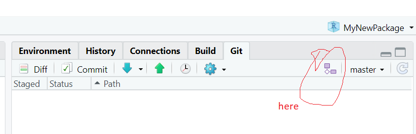

Week 7: More Git
| Compartmentalized | Documented | Extendible | Reproducible | Robust |
This week I will cover some more features of using Git, GitHub, and RStudio. Although I’ll be using GitHub, the same workflow applies to GitLab. I am going to be using GitHub Desktop to interact with GitHub since I find that GitHub Desktop helps me deal with merge conflicts and reverts (getting rid of changes I have made).
- What’s a merge conflict and how to fix it
- How to use branches
- How to do a pull request to pull a branch into your master repository
- How to ‘go back in time’ and get rid of changes
- How to create a release in GitHub
- A workflow to minimize headaches
Merge conflicts
Merge conflicts happen when there are changes to a file on your remote repository (GitHub or GitLab) but also changes to that same file on your local repository. Git doesn’t know how to resolve the conflicting changes and needs your help.
Resolving these with GitHub Desktop
GitHub Desktop makes resolving these pretty easy.
- If it tells you to fetch commits off GitHub, go ahead and do that.
- Now try to Pull. It’ll tell you that you have conflicts and give you options for what to do.
 * Clic the ‘x’ and Git will alter
* Clic the ‘x’ and Git will alter hello.R and show where the conflicts are. You then edit hello.R in RStudio to fix the conflicts. * If you know what file you want to use, use the little arrow dropdown to use the file on GitHub or on your local machine. * Use Abort Merge to abandon the merge. Your changes to hello.R are still there. * Click on History, right click the commit and revert to get rid of it. All file changes that are part of that commit will disappear! You can revert the revert if needed. * Go into hello.R and fix the conflict. Git won’t have marked it so it might be hard to find.
Resolving these with Git in RStudio
Unfortunately, when you hit ‘Push’ in the Git tab in RStudio, it will immediately change hello.R with the conflicts. RStudio won’t give you the chance to abandon the merge or pick one of the files.
But you can fix and then merge.
- Open
hello.Rand get rid of all the merge conflict code (denoted with the ============ and >>>>>>>>>>>>>>>>). - The file will appear in the Git tab.
- Click on the checkbox until a CHECK appears. Filled in square is not enough. You need the CHECK.
- Commit the change.
- Push.
Working with branches
When you start, keep it simple. Use a branch for one file. Work on the file and then merge it back into master. Then get rid of the branch.
Make a new branch in RStudio
Click the new branch icon and give your branch a name. Give it an INFORMATIVE name. tmp, foo are bad. hello_branch is good as it tells what this branch is for (working on the hello.R file). 
Now that you have a branch, it is critical that you pay attention to the Git tab and know where you are working. RStudio will remember what branch you are on.
Let’s make a change to hello.R on hello_branch, put to GitHub and see what the two branches look like.
Pull request, merge our branch with master
There are a few ways to do a pull request.
You can do it from GitHub Desktop. It’ll just redirect you to GitHub however.
You can do it from GitHub.

pull request from GitHub
Once you have created the pull requests, you’ll see that the pull request tab (in GitHub) shows that there is a request.
Click on the request. You have 2 options.
- Close it (don’t merge). If you close it, you can reopen it later.
- Merge the request.
You have done the merge on GitHub. You still need to do a Pull to get that change into your local repository.
Delete your branch when you are done with it. All the history is saved. There is no reason keep branches that you are done with.
Branch actions from GitHub Desktop
The branch toolbar in GitHub Desktop let’s keep branches up to date with each other.
Let’s say I am working on littleforecast.R in the master branch while working on hello.R in the hello_branch. I want to keep these synced up.
- Compare I can compare branches and look at the differences.
- Merge into current branch I can merge changes from one branch into another branch. It will let you see the changes before you decide to merge.
- Update from master This immediately merge changes from master into your branch. It won’t ask you. So you need to revert the change if you don’t like it.
This is similar to a pull request but happening locally. When a team is working on different branches, they would use pull requests.
Branch actions from GitHub
You can do the same actions from GitHub.
Getting rid of changes you have made
Say you made a change and you need to get rid of that. The temptation (for me) is to jump onto the Git command line and clobber my repository with reset and revert commands. Don’t do this. Here are some strategies that will make this let prone to leaving your code a mess.
Have you commited the changes yet?
No? Easy click on the file in the Git panel in RStudio, right click, and click ‘Revert’. Not this will take things all the way back to your last commit!! If you have been making a bunch of changes without committing those, then you are out of luck.
Yes? Go to History in the GitHub Desktop window, click on the commit and click ‘Revert’. This will get rid of all the changes that went with that commit. So if you changed multiple files, all those files will be reverted. If you have pushed the changes to GitHub, then you can push the revert and it’ll show up on GitHub too.
Yes but you just want to revert one file in a multi-file commit? Ok, you can do this at the Git command line, but I find that to be a huge time suck and in my early Git days, I sometimes left my repository with a horrible problem that I could not fix and had to completely rebuild my repo. Since I don’t need to be a Git wizard, this is what I do when I want to go ‘back in time’ for a since file.
Assuming you have already pushed the changes up to GitHub
- Go to the repo on GitHub
- Click ‘commits’ It’s a little icon above your code with a clock with a counter-clockwise arrow.
- Scroll to the commit where the file was in the state you want (one before the last bad commit).
- On the right click the
< >to browse your repo at the state in time where your file was ok. - Click on the file and copy the text.
- Go back to RStudio, open the file, and paste in the text from when it was good.
If you have not pushed the changes up to GitHub.
- Now you have to go to the Git command line. Git tab in RStudio and then click the cog > Shell.
- Note, in 9 times out of 10, I would push the commit to GitHub and then use the above copy/paste to avoid using the Git command line. I would find that much faster.
Ok, here’s the Git command to get a single file back. This works whether or not you have pushed to GitHub. The problem with this and why I don’t do it is that I usually need to look at the file. So I am scrolling back through the status of my repo in the past until I find the status that I want. Then I stare a bit and think and think. Then get a coffee and think some more. Then I scroll back through the status of the repo in the past some more and THEN I do the copy and paste. It is rarely the case that I know exactly what commit that I need to get rid of—and even rarer that I want to go completely to a status in the past.
- Open the Git bash shell
git logto find the commit hash (the long number)git checkout 1d0f8c2eb4e66db0a7123588ae2fad26a6338303~1 -- ./R/test.Rwould reset test.R to one before that commit. This part1d0f8c2eb4e66db0a7123588ae2fad26a6338303is the bad commit hash and this part~1means what the file was like 1 commit before that.
If you accidentally leave off the file name and Git says you have a detached head, use git checkout master to reattach your head.
A workflow to minimize headaches
Starting out
- Don’t use branches when you are just starting. Get used to committing and pulling without creating merge conflicts.
- Get in the habit of always doing a Pull/Push before you start work in your project.
Once you are experienced with GitHub
Once doing commits and push/pulls is familiar and you are no longer messing up your repository or making merge conflicts,
- Start using branches
- Work on one branch at a time
- Delete your branch when done
- Once you start using multiple branches, be careful to keep them separate. Modifications to
file_xyzshould only be in one branch.